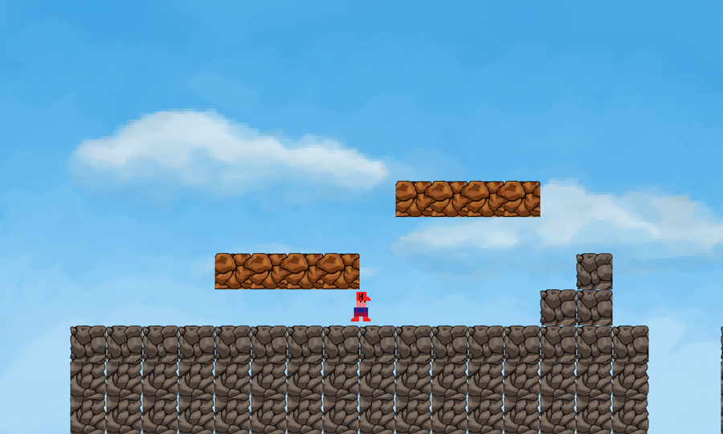
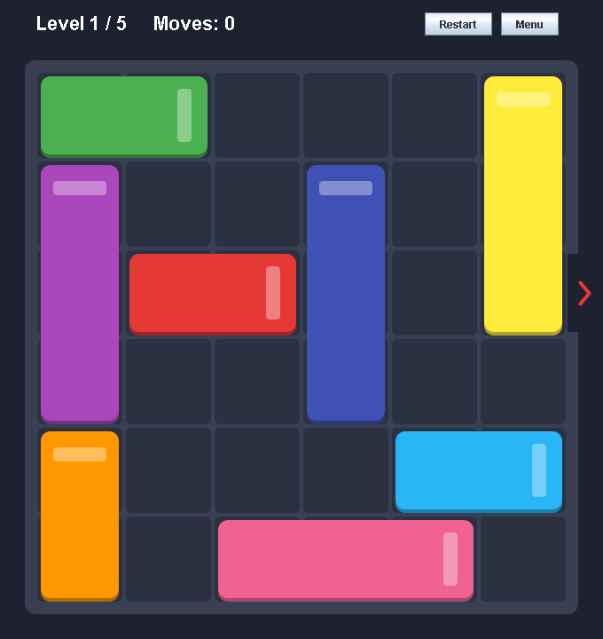

Nikita Buria
Unity Game Developer · C#
I build games in Unity with a focus on clean, decoupled architecture: state machines, events, data-driven design.
Featured: Follow The Cat
Top-down 2D action RPG. Wake in a dark cave, follow a guide cat, fight through a dungeon, sell loot and restore an abandoned town, until the King Wisp drops the last piece the town needs.
- State machines for the player, enemies and a boss (super armor, minion summoning with object pooling)
- Event-driven, decoupled systems: health and damage via interfaces, inventory with drag and drop, equipment, shop, town restoration
- Versioned JSON save system with validation, safe writes and backup recovery; autosave on every scene door
- ScriptableObject data for characters, enemies, items, loot tables and tutorial steps
How it's built
Each script has one job. States decide what and when; components do the how. UI only listens to events.
Other projects

Mario From Hell
A 2D side-scrolling platformer on its own game engine, built from scratch in Java Swing: fixed-timestep game loop, tile map loaded from a text file, scrolling camera, gravity, jumping and tile collision. I wrote the engine in 2022; in 2026 I finished and refactored it with Claude Code.
Source code →
Wordle in Hebrew & English
Wordle in two languages with one switch: a right-to-left Hebrew board and an English one, sharing the same game logic. Original scoring rules (including repeated letters) and physical keyboard support.
Play it below → Source code →
Rush Hour
The sliding-block puzzle in Java Swing: drag cars and trucks so the red car can exit. Game rules kept apart from drawing, levels written as text grids, smooth dragging with snapping, five levels checked solvable. A 2022 team project with Nachshon Kedar, rewritten in 2026 with Claude Code.
Source code →Earlier Java team projects (2022, with Nachshon Kedar): WhatsApp Web automation with Selenium, and a live currency-rate scraper with Jsoup and a Swing UI.
Play Wordle here
Guess the five-letter word in six tries. Click the board, then type or use the on-screen keyboard; the button in the corner switches between Hebrew and English.
About
Unity developer with Computer Science studies (B.Sc., on hold). I build with AI coding agents like Claude Code every day and review everything they produce. Former combat company sergeant major: I lead teams, stay calm under pressure and finish what I start.